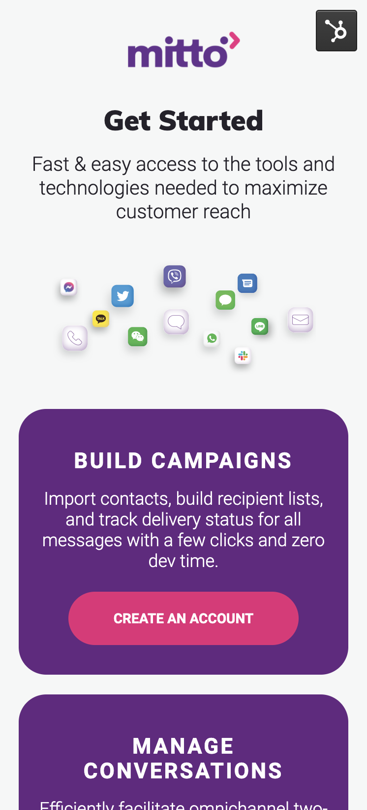

Intro
This was one of my bigger projects. It involved redesigning multiple pages on the Mitto site and building new pages. Now I’m not about to write a 10,000-word essay on how I built all of those pages, so let’s focus on a few. Specifically 2 of the new pages I designed (and built). These new experiences were meant to attract a more youthful audience. The mobile responsiveness was also highlighted as important.
Tools/software used: Sketch, Visual studio code, Hubspot


Process - Timeline, Mockups and Feedback
Building this with a smaller team was actually kinda fun. Me and another designer worked on several pages. Most of these were new experiences that didn’t exist on the site yet, which meant a lot of initial research had to be conducted. I was given some old user journeys and survey data. I was also given a list of competitors and I observed each site to note down what they’d done similarly and why.
- What are the similarities across competitors?
- Why were these features implemented?
- Will this experience be useful on the Mitto site?
I was also given the colour palette which I liked. Creating a colour palette for a project adds more back and forth which would mean more time spent on reviewing colours rather than designs which is another reason it’s faster and easier to work on an already existing site with a great brand guideline.
Gallery


